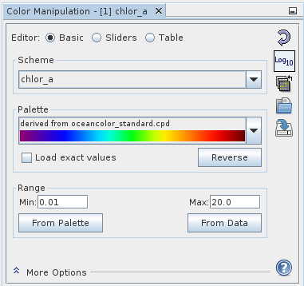
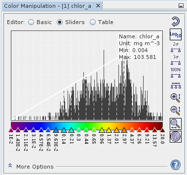
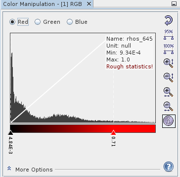
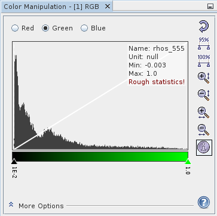
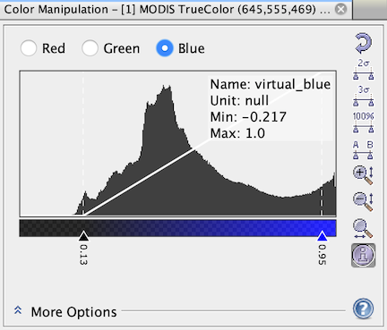
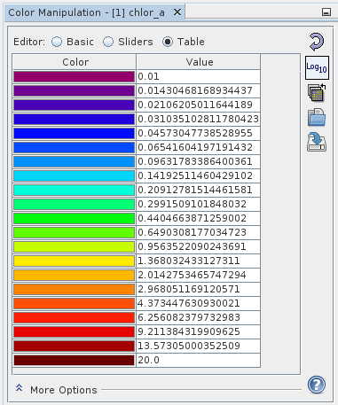
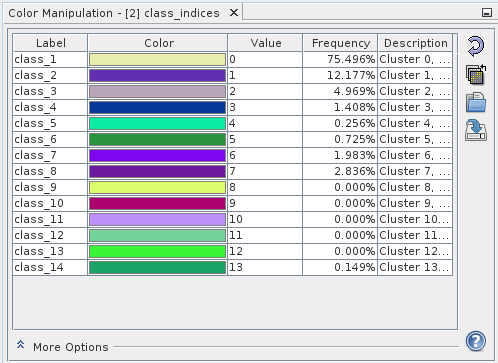

| Colour Manipulation | |
The "Colour Manipulation" tool window is used to modify the colors and color mapping used in the image. If you are opening an Image View of a band or tie-point grid, the image loads with the color settings of the band stored within the data file itself (BEAM-DIMAP format only) or applies default color settings as defined in the Preferences (/Tools/Options/Colour Manipulation).
Depending on the type of the source data used for the images and the type of images to be created, the this tool offers three editor modes: Basic, Sliders and Table. If the source data is a single spectral/geophysical band, then the Basic, Sliders and Table mode editors are all used. If the source data is an indexed band then only the Table editor is used. If the source data is 3 bands used to create a RGB image then only the Sliders editor is used.
To open the Colour Manipulation tool window, use the corresponding icon
 in the "Tool Windows" toolbar or select /Tool Windows/Colour Manipulation
from the main menu. Changes made within the Colour Manipulation tool window will directly become effective in the
image.
in the "Tool Windows" toolbar or select /Tool Windows/Colour Manipulation
from the main menu. Changes made within the Colour Manipulation tool window will directly become effective in the
image.
The "Basic" editor is only used when the source data is a single spectral/geophysical band. In this editor you can select the color palette, the range (minimum and maximum), and whether the scaling is logarithmic. These 3 parameters (palette, range and scaling) define a color scheme. You may either select a pre-defined color scheme or individually adjust any of the parameters. Note that a color scheme can automatically be applied when an image window is opened based on the band name (see Preferences).
|  |
|
A.1: Basic mode editor (for images of a single, spectral/geophysical band) |
Scheme: This section handles the setting and display of the color scheme.
Palette: This section enables you to load in a color palette.
Range: This section enables you to adjust the min and max of the color palettes. Any change to these fields will cause the color palette to redistribute based on this range, while retaining any current distribution point weighting factors contained within the currently loaded palette. To alter the distribution see the "Sliders" and the "Table" editors.
In the "Slider" mode you have control over how the individual points of the color palette are distributed. You also have features associated with using the statistics and histogram of the data. The histogram is displayed over the applied color palette with adjustable sliders for each point of the palette.
|  |
|
A.2: Sliders mode editor for images of a single, spectral/geophysical band |
Modifying the Sliders: Various aspects including color and position may be modified here, as well as adding and removing sliders.
Statistical Information: If the information Rough statistics! is shown, the statistical information is computed on a sub-sampled level. You can click it in order to compute the accurate statistical data
Range Auto-Adjust: Several buttons are available to auto-adjusted the range of the color palette. More range auto-adjust buttons can be added as well by setting your Preferences.
Histogram View Zoom: There are several zoom options for viewing the histogram over color palette image.
Slider Distribution: The sliders can be distributed all at once.
RGB Images The "Sliders" editor is also used for RGB images, in which case these is a red, green, and blue sliders channels
|  |  |  |
| C. Editor for images using separate R,G,B channels | ||
In this mode the sliders are used for contrast stretching in each of the R,G,B channels.
In the More Options panels, you can adjust the No-Data Colour and
Histogram Matching for the final image. The Source Band and Gamma
options
apply to each channel. The gamma value is used to adapt the transfer function which quantises the band's
sample values to colour values. A gamma value of 0.7 for the blue channel enhances most
RGB images.
In the "Table" mode you can select the color and specify the data value of each point
|  | |
| A.3: Editor for images of a single, spectral/geophysical band in Table mode |
The "Table" editor is also used for index bands.
|  |
| B.: Editor for images of a single, index-coded band |
Images of a single, index-coded band, e.g. the output of a look-up discrete colours from a fixed-size table
Labels and colours are simply changed by clicking into the corresponding table cell. In the More Options panels you can adjust the No-Data Colour.
In the More Options panel of all editors you can adjust the No-Data Colour. This colour will be used for no-data pixels in the source band(s). If you select None, no-data sample will be transparent in the image.
It is sometimes desirable to transform an image so that its histogram matches that of a specified functional form. It is possible to apply an equalized or normalized histogram matching to images which can often improve image quality.
Sometimes it is needed that an image is classified by value ranges. Each value range should be displayed with a defined colour. To toggle the use of discrete colours use the discrete colour checkbox. Each slider position defines the start or the end of a value range. The colour of an image pixel is defined by the following rule:
lsc = leftSliderColour
lsv = leftSliderValue
rsv = rightSliderValue
vop = valueOfImagePixel
if (vop >= lsv && vop < rsv) then pixelColor = lsc
Discrete colours 'off'

Discrete colours 'on'

The colour palette information used for the current image can also be exported into an image file. Click the context menu item Export Colour Legend over an open image view in order export the colour legend.
The colour palette can be also exported as a Colour Palette Table. Choose from the File menu Colour Palette to export the table as a *.csv or *.txt file.
The information icon  is used to toggle the visibility of the extra
information area.
is used to toggle the visibility of the extra
information area.
The help icon  opens the Help for the current context.
opens the Help for the current context.